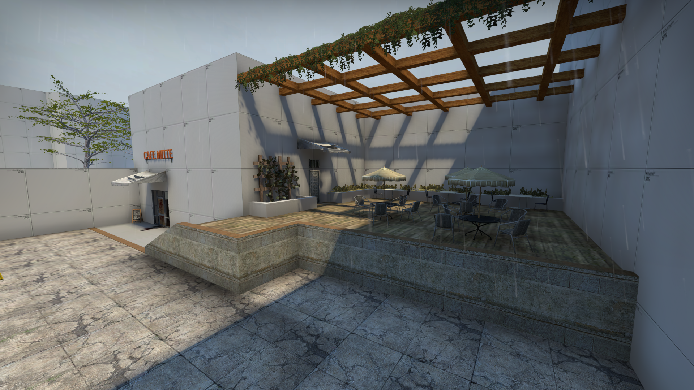
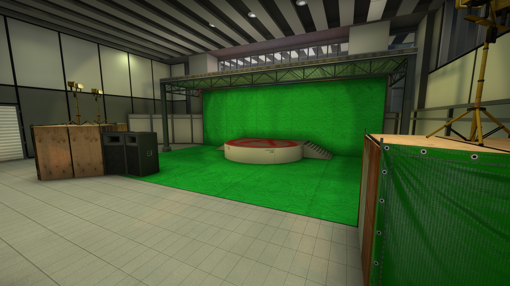

Dan Ewing
Level Designer
3D Environment Artist
Coder-to-be
(Experienced in C#, Python, Squirrel Vscripting)

Level Designer
3D Environment Artist
Coder-to-be
(Experienced in C#, Python, Squirrel Vscripting)


Released on May 17, 2017.
Grapple was my first ever designed map. Designed after the popular official map, de_dustII, Grapple takes place in a fictional desert town with (somehow) a snow layered setting.
A remake was in the works in 2018 with a friend of mine, including a visual facelift and a lot of layout changes, but was stopped halfway through.
Grapple earned about 400 subscribers after its release.


Released on December 21, 2017.
Aztec Tribute was a personal remake of an official CS:GO map, Aztec.
A game update on November 13, 2017 removed the map from the game, prompting my desire to remake it.
My remake touched up on certain gameplay and level design details, while leaving most visuals alone.
Aztec Tribute earned just under 1,000 subscribers.
Released on Dec 29, 2017.
Rooftop is a quick gamemode remake of the CS:GO map with the same name, Rooftop.
Rooftop first was a Left 4 Dead 2 map which was ported into CS:GO, using an experimental Capture Point gamemode.
My version changed it from a Capture Point gamemode to a 1 bombsite defusal gamemode. Very minor gameplay changes and layout fixes.
Rooftop earned about 800 subscribers.



Greybox version released on January 19, 2018.
Greybox version finalized on August 19, 2018.
Fully completed map released on February 20, 2019.
Yield was my first fully completed map, featuring an original layout, community and private playtesting, visual style, and custom textures.
Yield's creation was originally intended to be an entry for the Mapcore 2017 Level Design Contest under the name Overgrowth, but I later pulled the map and worked on it at my own pace.
Yield earned over 4,000 subscribers, over 100 ratings for a 4/5 Star Score, and featured on the front page of the CS:GO workshop for over a week.


(Click above image for the link to the workshop page!)
Released on July 16, 2020.
Frostbite was a collaborative project between myself and 9 others to work on a battle-royale styled map refered to as the 'Danger Zone' gamemode.
Based on a fictional ski resort in Switzerland.
On December 3, 2020, Frostbite was one of a few maps officially added into CS:GO via the 'Operation Broken Fang' update.
Frostbite was the second ever community-made Danger Zone map to be added into CS:GO.
Frostbite also had the largest team to work on a map that was accepted into the game (10).
On May 3,2021, Operation Broken Fang ended and most community maps were removed, but Frostbite was officially added into the game as part of the Danger Zone map rotation.
Frostbite earned over 25,000 subscribers, over 1,900 ratings for a perfect 5/5 Star Score, and was featured on the front page of the CS:GO workshop for over a month as well as the 'Most popular of the year' page.
Roughly around late 2019, I was brought on for layout resdesigning on a map called Akiba, a Japenese Superstore.
While much of the map was redesgined, it's on idefinite hold as of now.
Akiba earned about 400 subscribers.
Staying with the Japan theme, I was brought on for layout and visual reference on a map called Akihabara, a bustling city in Japan.
Akihabara was first submitted for the 2018 wingman contest, in which it scored 5th place. Months later I was brought on for a redesign of the map.
Currently, the map is still being worked on and is expected to release in the forseeable future.
Akihabara's original release earned over 29,300 subscribers, over 1,100 ratings for a perfect 5/5 Star Score, and spent weeks on the front of the CS:GO workshop.
Akihabara was the most subscribed map from the contest and one of the most subscribed wingman maps ever.

On August 3, 2018, the r/csmapmakers community announced a level design contest for the wingman (2v2) gamemode for CS:GO. I was brought on as one of the 5 judges and co-organizer of the contest.
The contest featured 44 submissions.
Here were some of the top ranked maps:

On May 11, 2020, in sponsorship with from Textures.com, Logitech, and others totaling over $1400 in prizes, the Source Engine Discord community announced the 2020 Wingman Contest for CS:GO. I was one of the 7 head judges. Youtuber judges were also featured.
The contest featured 94 submissions.
Here were some of the top ranked maps: